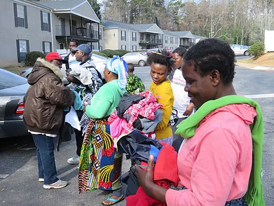
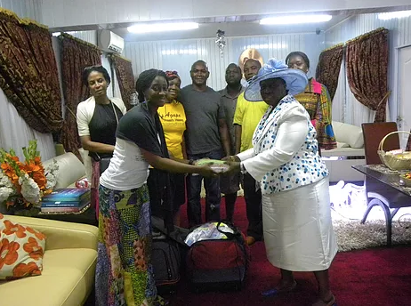
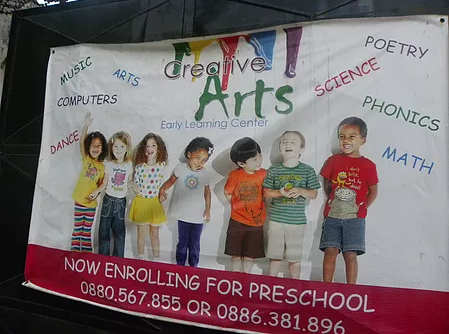

In addition to Building, Growing & Learning, we believe in the call to give of our time, talents, and resources to Bless God's children. This means going into other parts of the world and blessing those in need.
Donation to the Clarkson Refugee Community
In December 2016 and February 2017, Agape Women Ministry donated winter jackets and coats to families in the Clarkston Refugee community.
Published 15th July 2014
5 minute read
Donation to the The Ruach Foundation
In March 2015, Agape Women Ministry contributed towards a Monetary donation to assist with food and medical supplies during the Ebola Crisis in Liberia, West Africa.
This donation supported the Mango Town Mission School for the Deaf and Speech Impaired.
See January 5th, 2014 contribution.
- 2 50lbs bags of rice
- 5.5 gallons of palm oil
- 3 gallons of vegetable oil
- 1 carton of sardines (48ct)
- 1 carton of luncheon meat (72ct)
This donation also supported the Mango Town Mission School for the Deaf and Speech Impaired.
Donation to the The Redeemed Christian Church of God Maternity Center
On March 3rd, 2016 Agape Women Ministry donated 100 bags of essential baby supplies to The Redeemed Christian Church of God Maternity Center .
Supplies included
Each Family received a bag as well the below items.
- bottles
- bibs
- wipes
- pacifiers
- socks
- q-tips

Donation to the Cachelle International Creative Arts Center
On January 4th, 2014, Agape Women Ministry sponsored children to attend arts, music, and dance classes at the Creative Arts Center.
